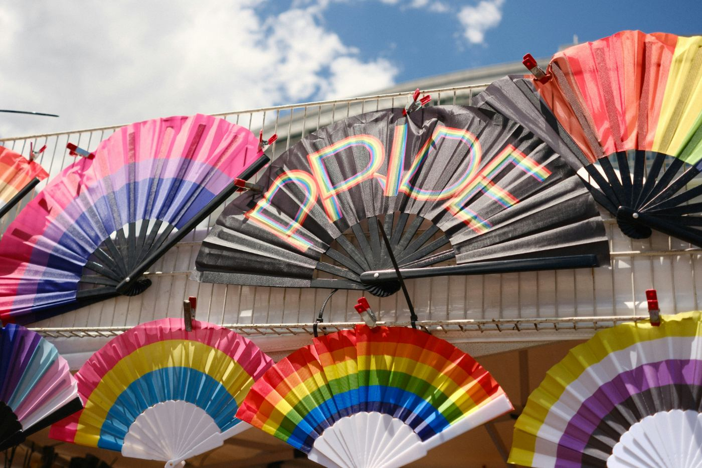

El Bachillerato Popular Mocha Celis lleva el nombre de una joven travesti tucumana que en los años 90 trabajaba en el barrio porteño de Flores, en tiempos en que los edictos policiales eran el instrumento con el que el Estado perseguía y borraba cuerpos trans y travestis.
Según relató la activista Lohana Berkins, una noche llegó la noticia de que Mocha había desaparecido. Cuando sus compañeras la encontraron, fue en el Hospital Penna: "había muerto con tres disparos. No pudieron realizarle una autopsia ni presentar una denuncia porque no eran su familia biológica"
Mocha Celis nunca pudo terminar la secundaria. Por eso, cuando Lohana Berkins eligió el nombre del bachillerato, lo hizo porque Mocha representaba exactamente eso: la educación que le había sido negada. Cada egresada que obtiene su título es, en ese sentido, una forma de vencer al sistema que la excluyó. El nombre no es solo homenaje: es un programa político y una afirmación de que ese lugar que les fue quitado puede, y debe, ser recuperado.
De izquierda a derecha: Lorena, Belén y Mocha Celis 22 de mayo de 1996 Fuente: Archivo de la Memoria Trans – Fondo Lorena

Fuentes:
https://agenciapresentes.org/2025/10/28/bachillerato-trans-mocha-celis-educar-en-comunidad-como-respuesta-al-odio/
https://elgritodelsur.com.ar/2025/10/mocha-celis-educacion-derecho-comunidad-refugio/
https://ornitorrinco.com.ar/mi-pais/sociedad/mocha-celis-la-escuela-que-ensena-a-vivir-con-orgullo1/
https://youtu.be/sSwC-OwbOFk?si=fOdGFm5jfjAP2uhT